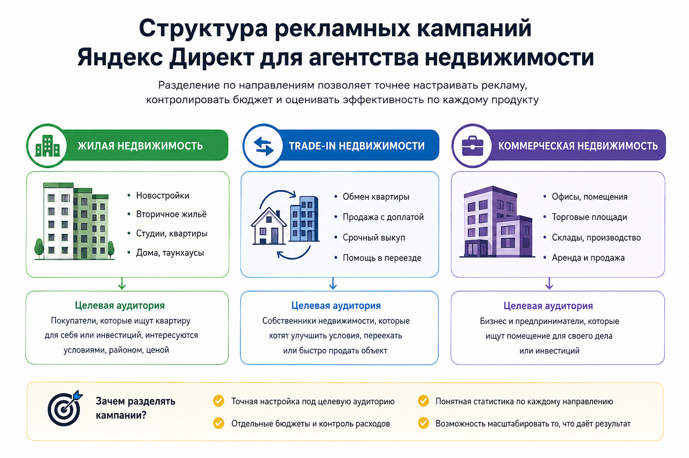
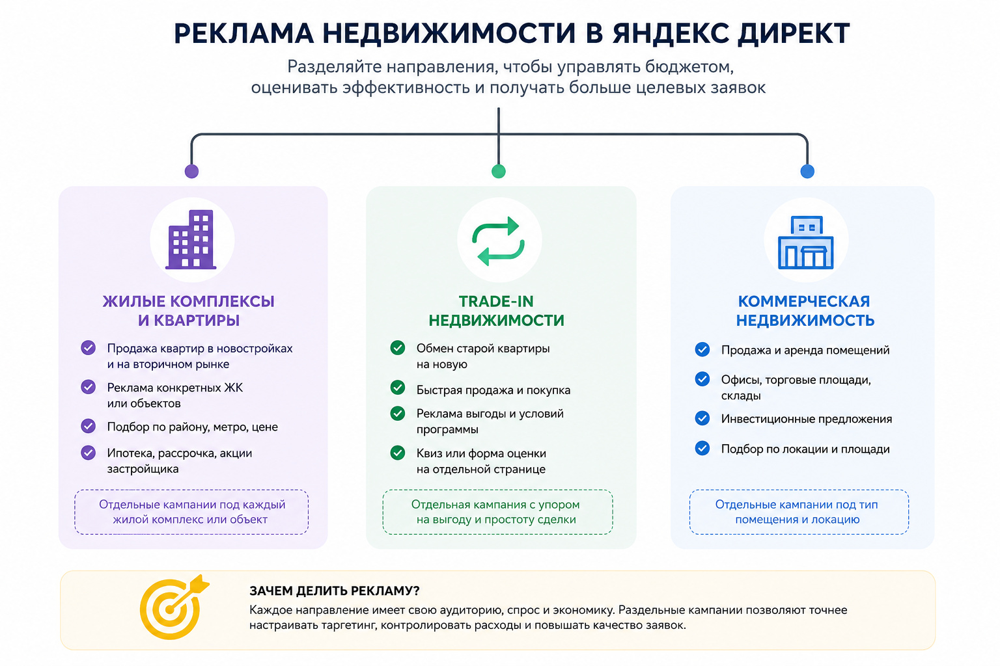

Блог о платном трафике
Яндекс Директ для агентства недвижимости
Яндекс Директ для агентства недвижимости имеет смысл настраивать не как одну общую рекламную кампанию на все услуги, а как несколько отдельных направлений. Покупка квартиры, новостройки, trade-in, коммерческие помещения и продажа конкретного ЖК отличаются спросом, аудиторией и экономикой.
В своей практике я видел это на разных проектах недвижимости. Где-то основной результат давала РСЯ и квиз, где-то приходилось разделять рекламу по каждому объекту, а где-то главной задачей было не увеличить количество заявок, а удержать их стоимость и качество.
Поэтому начинать настройку Директа стоит не со сбора ключевых фраз, а с вопроса: что именно агентство хочет продавать и какое обращение для него считается целевым.
Что можно рекламировать в Яндекс Директе
У агентства недвижимости обычно сразу несколько направлений: продажа квартир на вторичном рынке, новостройки, подбор объектов, trade-in, коммерческая недвижимость, аренда или отдельные жилые комплексы.
Объединять все это в одну рекламную кампанию неудобно. Человек, который ищет помещение под бизнес, сильно отличается от покупателя квартиры в новостройке. У них разные запросы, аргументы при выборе, посадочные страницы и ценность заявки.
Я обычно разделяю рекламу минимум по типу продукта и географии. Если агентство одновременно продает несколько ЖК, их также желательно разделять, чтобы видеть расход и обращения по каждому объекту отдельно.
Такой подход использовался, например, в проекте по продаже студий в Москве. Продвигались сразу несколько жилых комплексов, спрос между ними распределялся неравномерно, поэтому отдельная статистика по каждому объекту была критична. Средняя стоимость заявки с формы в этом проекте составила 528 ₽. Посмотреть кейс по продаже студий в Москве

Поиск или РСЯ для агентства недвижимости
Обычно я рассматриваю Поиск и Рекламную сеть Яндекса как разные источники спроса.
На Поиске можно работать с пользователями, которые уже сформулировали задачу: ищут квартиру, определенный район, ЖК, коммерческое помещение или услугу агентства. Здесь выше вероятность получить человека с конкретной потребностью, но в конкурентных сегментах стоимость трафика может быть высокой.
РСЯ позволяет работать шире. Она особенно интересна там, где прямого поискового спроса недостаточно или он слишком дорогой. Через сети можно находить пользователей на более раннем этапе выбора, возвращать посетителей сайта и тестировать разные предложения.
Нет универсального правила, что недвижимость нужно рекламировать только на Поиске или только в РСЯ. В рекламе trade-in недвижимости основной поток обращений удалось получить именно через РСЯ. При рекламном бюджете около 38 000 ₽ в месяц заявки в сетях стоили примерно 1500 ₽, а общий CPL в рабочий период держался около 1900 ₽. Посмотреть кейс агентства недвижимости с trade-in
Поэтому я не распределяю бюджет между Поиском и РСЯ заранее по фиксированной пропорции. Сначала запускаются гипотезы, после чего бюджет постепенно переносится туда, где есть приемлемая стоимость и качество обращения.
Как работать с поисковым спросом
Семантика для недвижимости получается неоднородной. В ней могут одновременно присутствовать общие запросы, названия ЖК, районы, станции метро, улицы, типы квартир и конкретные характеристики объекта.
Одна из ошибок - собрать тысячи фраз и считать, что большая семантика автоматически даст хороший результат. Гораздо полезнее разделять запросы по намерению пользователя. Например, человек с запросом о покупке конкретной квартиры ближе к сделке, чем пользователь, который пока просто изучает цены на жилье.
Одновременно с ключевыми фразами в современных кампаниях Яндекс Директа используется автотаргетинг. Яндекс анализирует объявление и посадочную страницу и подбирает дополнительные поисковые запросы. На Поиске автотаргетинг полностью отключить нельзя, поэтому его категории и фактические поисковые запросы нужно контролировать.
Особое внимание я уделяю запросам, которые выглядят тематическими, но не соответствуют предложению. Например, запрос о долгосрочной аренде бесполезен кампании на продажу квартиры, даже если формально относится к недвижимости.
География рекламы
Для агентства недвижимости геотаргетинг влияет на результат сильнее, чем во многих других нишах. Можно продвигать конкретный город, район или локацию вокруг объекта. При этом нужно учитывать не только место проживания пользователя, но и его интерес к выбранному региону.
Например, квартиру в Москве может искать человек, который сейчас находится в другом регионе. Если механически ограничить рекламу только фактическим местоположением пользователя, часть потенциального спроса можно потерять.
Настройки географии поэтому нужно выбирать исходя из конкретного продукта, а не по принципу «агентство находится в этом городе, значит показываем рекламу только здесь».

Посадочная страница влияет на результат не меньше рекламы
Даже правильно настроенный Яндекс Директ не компенсирует слабую посадочную страницу. В недвижимости особенно плохо работают страницы, где пользователь после клика видит десятки направлений агентства и должен самостоятельно искать нужный объект или услугу.
Иногда выгоднее сделать отдельную страницу под конкретный продукт. Так произошло в проекте с trade-in недвижимости. Изначально рекламный трафик велся на многостраничный сайт, который хорошо подходил под SEO, но плохо фокусировал пользователя на конкретном предложении. Для рекламы сделали отдельный лендинг и квиз, через который в итоге пошла значительная часть заявок. Кейс агентства недвижимости с trade-in
Это не означает, что каждому агентству обязательно нужен квиз. Для одного проекта лучше сработает каталог объектов, для другого - посадочная страница конкретного ЖК, для третьего - форма подбора недвижимости.
Главное, чтобы содержание страницы продолжало обещание из объявления и быстро давало человеку ответ: что ему предлагают, где находится объект, сколько он стоит или от чего зависит цена, почему стоит оставить заявку и что произойдет после обращения.
Что считать конверсией
В недвижимости нельзя оценивать рекламу только по отправленным формам. Я отслеживаю как минимум заявки с сайта и звонки. Если есть CRM, желательно дополнительно передавать информацию о качестве обращения и последующих этапах сделки.
Это особенно существенно для агентств. Дешевая заявка от человека без подходящего бюджета может оказаться хуже более дорогого обращения, которое дошло до просмотра объекта.
В проекте по продаже студий использовался коллтрекинг UIS. Заявки с сайта и звонки считались отдельно. Средняя стоимость формы составила 528 ₽, тогда как звонок обходился в среднем в 2771 ₽. Если бы оценивалась только одна из этих конверсий, картина эффективности рекламы была бы неполной. Кейс по продаже студий в Москве
Для меня итоговая цепочка выглядит примерно так:
рекламный расход → обращение → квалифицированный лид → показ или консультация → сделка
Чем дальше удается передать аналитику по этой цепочке, тем точнее можно оценивать рекламные кампании.
Как выбирать стратегию в Яндекс Директе
Если реклама уже получает достаточно полезных конверсий, логично тестировать оптимизацию именно по ним, а не управлять рекламой только исходя из количества кликов.
Стратегия «Максимум конверсий» позволяет оптимизировать кампанию по выбранным целям с ограничением по средней цене конверсии, бюджету или доле рекламных расходов. Слишком низкая целевая стоимость или недостаточный бюджет могут ограничивать работу стратегии. После существенных изменений алгоритмам также требуется время на обучение.
Для агентств с хорошо настроенной аналитикой интересна и стратегия «Максимум прибыли». Но стратегия сама по себе не исправляет плохие исходные данные. Если в одну цель попадают целевые покупатели, спам, случайные заявки и обращения не по тому объекту, алгоритм учится на смеси разных сигналов.
Реальные результаты рекламы недвижимости
На своих проектах я получал очень разные цифры, и это хорошо показывает, почему нельзя обещать агентству фиксированную цену заявки еще до запуска.
В проекте с trade-in недвижимости задача заключалась в том, чтобы удерживать стоимость обращения ниже установленного клиентом предела. После переработки посадочной страницы и запуска квиза основной поток заявок пошел через РСЯ, где стоимость обращения была около 1500 ₽. Кейс: агентство недвижимости и trade-in
В проекте по коммерческой недвижимости в ЖК «Ватутинки Парк» первоначально было 7 лидов примерно по 6000 ₽. После изменения воронки и оптимизации рекламы получили 26 обращений примерно по 1700 ₽. В одном из анализируемых периодов 10 из 12 заявок были квалифицированными. Кейс: коммерческая недвижимость в ЖК «Ватутинки Парк»
В проекте по московским студиям одновременно рекламировалось несколько ЖК. Средняя стоимость заявки через форму составила 528 ₽, но результаты отдельных объектов сильно различались. Сам продукт влиял на эффективность не меньше настроек рекламы: привлекательные ЖК давали заявки значительно легче, чем слабые предложения. Кейс: продажа студий в Москве
Эти результаты нельзя переносить на другое агентство как прогноз. Они показывают другое: стоимость заявки зависит от объекта, региона, конкуренции, посадочной страницы, выбранного оффера и качества настройки.
Почему дешевые лиды не всегда означают хорошую рекламу
В агентстве недвижимости продажа редко заканчивается сразу после заполнения формы. Поэтому снижение CPL само по себе может ничего не дать бизнесу. Если вместе с уменьшением цены заявки падает ее качество, агентство получает больше работы для отдела продаж, но не больше сделок.
Я предпочитаю смотреть отдельно стоимость всех обращений и стоимость квалифицированного лида.
Так было в проекте коммерческой недвижимости. Формально можно было оценивать рекламу просто по CPL, но обратная связь клиента позволяла видеть, сколько обращений действительно соответствовали требованиям. Именно этот показатель полезнее при принятии решений о масштабировании. Кейс коммерческой недвижимости
Типичные ошибки
Чаще всего проблемы появляются не из-за какой-то одной настройки Директа, а из-за связки нескольких ошибок:
- все направления агентства объединены в одной кампании;
- один общий сайт используется для совершенно разных предложений;
- реклама оценивается только по кликам или заявкам без проверки качества;
- нет раздельной статистики по ЖК и услугам;
- бюджет постоянно включают и выключают;
- целевую стоимость конверсии задают значительно ниже того уровня, который кампания реально способна получать;
- рекламные объявления обещают то, что пользователь не видит после перехода на сайт;
- слабый объект пытаются компенсировать только изменением настроек рекламы.
Последний пункт особенно характерен для недвижимости. Если цена, район, состояние объекта или само предложение заметно уступают конкурентам, Яндекс Директ не исправит продукт. Он может привести аудиторию, но не заставит ее выбрать предложение.
Как оценивать бюджет
Я не использую универсальный рекламный бюджет для всех агентств недвижимости. Логичнее сначала определить, сколько агентство может платить за квалифицированное обращение с учетом конверсии отдела продаж и комиссии со сделки. После этого можно оценивать допустимую стоимость обычного лида и объем рекламы.
Например, если бизнес знает конверсию из квалифицированного обращения в сделку и среднюю прибыль с одной сделки, становится понятнее, сколько можно инвестировать в привлечение клиента.
Без такой экономики фраза «нужно получать заявки как можно дешевле» почти бесполезна. В какой-то момент дальнейшее снижение целевой цены просто уменьшит количество доступного трафика.
Когда Яндекс Директ подходит агентству недвижимости
Директ особенно полезен, когда у агентства есть понятный продукт, нормальная посадочная страница, возможность быстро обрабатывать обращения и хотя бы базовая аналитика.
Сложнее получить устойчивый результат, если агентство одновременно рекламирует десятки несвязанных направлений, не передает обратную связь по качеству лидов и часто останавливает кампании.
Я рассматриваю Яндекс Директ как часть общей системы: предложение, сайт, реклама, Метрика, звонки, CRM и работа менеджеров должны быть связаны между собой.
Именно по такому принципу я веду проекты с платным трафиком: сначала разбираю бизнес и воронку, затем рекламные кампании и только после этого масштабирую рабочие связки. Подробнее о моем подходе и других проектах можно посмотреть на главной странице naklikay.ru.
FAQ
Сколько стоит заявка из Яндекс Директа для агентства недвижимости?
Фиксированной цены нет. Она зависит от региона, типа недвижимости, конкуренции, сайта, рекламного предложения и качества самой настройки. Даже внутри одного агентства разные ЖК могут давать обращения с сильно отличающейся стоимостью.
Что лучше для недвижимости: Поиск или РСЯ?
Нужно тестировать оба направления. Поиск позволяет работать с выраженным спросом, а РСЯ может давать дополнительный объем и иногда оказывается выгоднее в сегментах с дорогим поисковым трафиком.
Нужен ли отдельный лендинг?
Не всегда. Но если большой сайт агентства содержит много разных услуг и объектов, отдельная страница под конкретное предложение часто позволяет сделать путь пользователя понятнее.
Что важнее: стоимость заявки или ее качество?
Для агентства недвижимости важнее стоимость квалифицированного обращения и последующая конверсия в сделку. Низкий CPL сам по себе не показывает реальную эффективность рекламы.